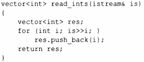
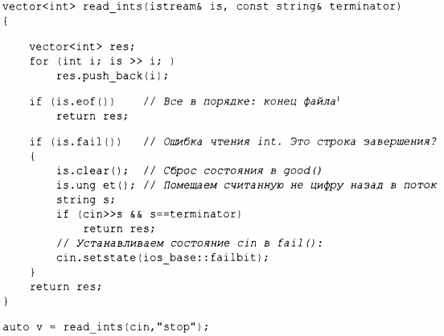

⇐10.3 Ввод 10.5 Ввод-вывод пользовательских типов⇒
У потока iostream есть состояние, которое можно проверить, чтобы определить, удачно ли выполнена операция. Наиболее часто используется чтение последовательности значений:
Здесь чтение выполняется до тех пор, пока не встретится нечто, что не является целым числом. Это то, что обычно является концом ввода. Здесь происходит следующее - операция is>>i возвращает ссылку на is, а проверка iostream дает true, если поток готов к другой операции.
В общем случае состояние ввода-вывода хранит всю информацию, необходимую для чтения или записи, такую как информация о форматировании (§ 10.6), состояние ошибки (например, достигнут ли конец ввода) и какая буферизация используется. В частности, пользователь может установить состояние отражающим, что произошла некоторая ошибка (§10.5), и очистить состояние, если ошибка не была серьезной. Например, мы могли бы представить себе версию read_ints (), которая считывает строку, завершающую ввод:
